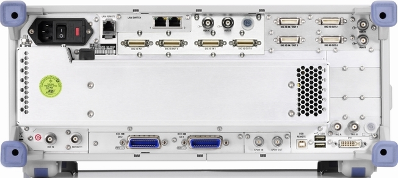

Rear Panel Tour
This section gives an overview of the rear panel controls and connectors of the R&S CMW.


Contents
- AC Power Connector, Fuses and Ground Terminal
- LAN REMOTE Connector
- LAN SWITCH R&S CMW-B661A (Optional)
- LAN SWITCH R&S CMW-B661H (Optional)
- LAN DAU Connector (Optional)
- USB DAU Connector (Optional)
- DAU Status LED (Optional)
- DIG IQ and AUX Connectors (Optional)
- CMW CONTROL OUT Connector (Optional)
- MCC IN Connector (Optional)
- SPDIF IN/OUT Connectors (Optional)
- SYS SYNC IN/OUT Connectors (Optional)
- TRIG A, TRIG B Connector
- REF IN, REF OUT 1 Connector
- IEEE 488 CH 1/2 Connectors (Optional)
- PCIe IN Connector (Optional)
- USB REMOTE Connector
- USB Connectors
- DVI (Optional)